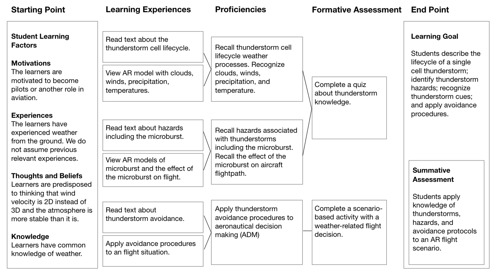
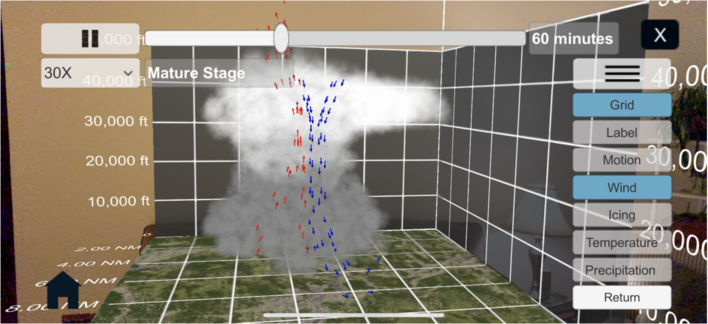
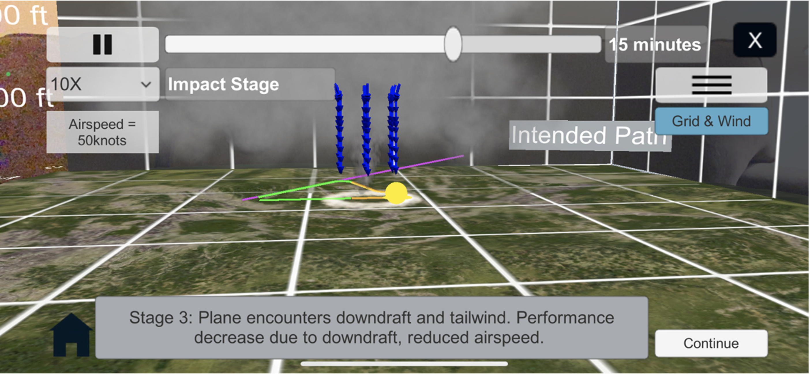
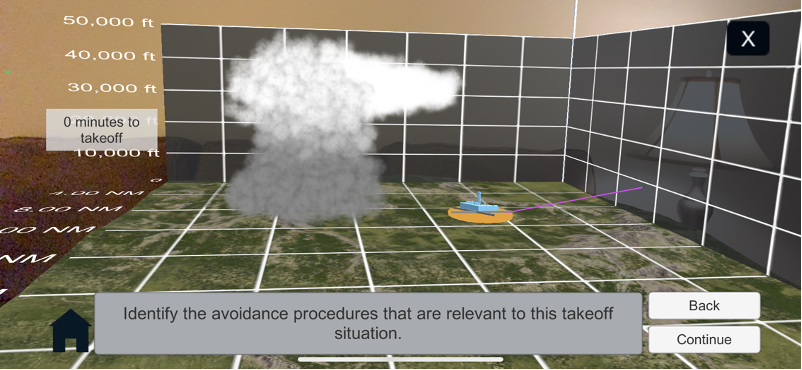

Evaluation of Augmented Reality Interactive Print for General Aviation Weather Training
The work is summarized below. A full report is published in the Journal of Air Transportation.
Introduction
The development and delivery of 3D weather model visualizations in AR learning environments provides students with immersive learning opportunities that support their motivation to learn about the weather. Students report that weather is sometimes presented as a boring topic, and it impacts their motivation to learn about the weather. Previous work has shown that students who completed learning activities with 3D AR thunderstorm models developed weather knowledge. Given previous work, this work primarily investigates whether completing learning activities with 3D AR weather materials may enhance students’ learning experiences, particularity their motivation to learn, compared to traditional print training materials, and investigates whether completing learning activities with 3D AR materials may enhance students learning outcomes compared to traditional print materials.
Approach
The approach for this project is to design and evaluate interactive print training about thunderstorms for GA weather education. Interactive print integrates traditional print materials with interactive digital content and has the potential to enhance students’ learning experiences and outcomes. The interactive print training in this study integrates 3D AR models and scenario-based activities into a print learning module using AR markers so that the AR content is presented alongside the relevant print content. AR weather models may support students’ motivation to learn about weather, their ability to visualize 3D weather phenomena, and their development of weather knowledge. AR scenario-based activities may support students in learning to apply weather knowledge in flight situations. This work is needed to investigate the design of effective AR content and the potential benefits of providing interactive print training modules compared to a print training module for GA weather education.
Design
This work designed an interactive print learning module that enhanced traditional text-based learning with AR learning activities and AR scenario-based activities. The AR learning modules was situated in a learner-centered instructional design plan (see Figure 1). While the print module had the same activities as the AR module, the print modules activities were delivered with static text and images.

The first learning activity was about the thundersorm cell lifecycle.

The second learning activity was about the thunderstorm hazards

The third learning activity was about the microburst characteristics

The fourth learning activity was about about the effects of a microburst on an aircraft flightpath.

The fifth learning activity was about thunderstorm avoidance.

The sixth learning activity was a scenario-based takeoff activity.

The seventh learning activity was a scenario-based approach activity.

Evaluation
Hypotheses
H1: Participants in the interactive print condition will have higher motivation levels than the participants in the print condition.
H2: Participants in the interactive print condition will have more confidence, feel the activities more effective for learning, and feel better prepared compared to participants in the print condition.
H3: Participants in the interactive print condition will have a greater improvement in factual knowledge scores than participants in the print condition.
H4: Participants in the interactive print condition will have a greater improvement in visual knowledge scores than participants in the print condition.
Participants
The participants were 52 (38 male, 14 female) student pilots or pilots with fewer than 110 total flight hours. Of the 52, 25 had FAA private pilot certificates, 25 were student pilots, one had FAA private pilot certificates with instrument ratings, and one had no pilot certification. The participants had an average age of M = 23.6 (SD = 8.6) years. They had average total flight hours of M = 50.3 (SD = 29.6) hours, average instrument flight hours of M = 4.8 (SD = 6.6), and average flight hours in the last 60 days of 22.6 (SD = 19.1). Of the 52, 27 reported having taken private pilot ground school, 21 had taken an aviation meteorology course, four had taken a general meteorology course, one had a meteorology major and had taken several meteorology courses, and 11 had no previous training. They had an average M = 11.9 (SD = 29.4) hours of experience using AR/VR, with 23 (44%) reporting no experience. Those who had used AR/VR reported that their experiences primarily consisted of using VR for flight simulation and gaming.
Procedure
Participants complete the learning module from beginning to end, including the tasks about the thunderstorm cell lifecycle, microburst characteristics, effects of a microburst on a takeoff flight path, thunderstorm avoidance, takeoff scenario, and approach scenario. The study tasks were described in more detail in the section “Design” section.
Data collection and analysis
Table 1 summarizes the data collection and measures.
| Dependent Variable | Metric | Data type | Method | Frequency |
|---|---|---|---|---|
| Motivation | RIMMS | Scale 1-5 | Questionaire | Post-experiment |
| Activity Effectiveness | Rating | Scale 1-5 | Questionaire | Post-task |
| Activity confidence | Rating | Scale 1-5 | Questionaire | Post-task |
| Factual knowledge | Quiz Score | Percent | Quiz | Pre/Post experiment |
| Visual knowledge | Quiz Score | Percent | Quiz | Pre/Post experiment |
| Task time | Time | Seconds | Qualtrics | Post-task |
| Task correctness | Score | Percent | Qualtrics | Post-task |
| System Usability | SUS | Scale 1-5 | Questionaire | Post-experiment |
| Net Promoter Score | Rating | Scale 1-10 | Questionaire | Post-experiment |
| Positives | Statements | Text | Written statement | Post-task and experiment |
| Improvements | Statements | Text | Written statement | Post-task and experiment |
Motivation and learning activity effectiveness were averaged and compared between conditions using independent samples t-tests. Change in scores from pre-test to post-test were calculated for factual knowledge and visual knowledge, and they were compared between conditions using independent samples t-tests. Decision making and number of avoidance procedures were averaged and compared between conditions using independent samples t-tests. A p-value ranging from 0.05 to 0.1 was categorized as marginally significant, values below 0.05 were categorized as significant, and values below .001 were categorized as highly significant. The effect sizes were calculated using Cohens d and categorized according to Cohen’s thresholds where 0.2 <= d < 0.5 is a small effect, 0.5 <= d < 0.8 is a medium effect, and d >= 0.8 is a large effect. Written statements were be analyzed for relevance to a hypothesis, frequency, and severity.
Results and Discussion
Hypotheses 1 was fully supported. Participants in the interactive print condition had significantly higher motivation levels than those in the print condition. The AR activities in this study were expected to improve participants’ learning motivation, as they have in other domains. AR activities provided a more engaging presentation of weather, which may help students perceive weather as an engaging topic rather than a boring topic. For example, one student noted that the AR was a more attention-grabbing presentation of the weather content. They said, "I prefer [the AR] because it held my attention really well when I probably would've gotten bored with a presentation or reading a textbook." Use of additional AR materials may lead to broader increases in students’ motivation to learn about the weather.
Hypotheses 2 was partially supported. There was a marginally significant difference in how participants in the interactive print condition rated the effectiveness of their activities for learning the topic compared to how participants in the print condition rated the effectiveness of their activities. However, there was no significant difference for ratings of confidence or preparation for decision making. The AR activities were expected to help participants engage with learning, leading them to complete the activities with more confidence, perceive the activities as more effective, and perceive that the activities better prepared them for weather-related decision making. Participants in this study were not more engaged in the AR learning activities buy they did them as more effective.
Hypotheses 3 was not supported. Both modules were effective in helping students develop factual knowledge of weather. Participants in the print condition improved by an average of 31.9% and participants in the interactive print condition improved by an average of 37.7%. Participants in the interactive print condition did not have a significantly larger improvement in factual knowledge than the pint module. AR materials had enhanced learning performance in other studies, but the AR weather activities did not significantly enhanced students’ factual knowledge in this study. The pre-test scores in this study were high at 56.4% (SD = 20.2%), and therefore providing less room for improvement, let alone a difference in improvement.
Hypothesis 4 was not supported. Participants in both conditions improved their visual knowledge from pre-test to post-test. Participants in the print condition improved by an average of 13.5% and participants in the interactive print condition improved by an average of 5.8%. Participants in the interactive print condition did not have a larger improvement in visual knowledge. AR materials had enhanced students’ understanding of spatial information in other studies. AR weather activities were expected to enhance students’ spatial comprehension of weather phenomena and the impacts of weather on flight. Once again, the pre-test scores in this study were high at 62.8% (SD = 24.9%), and therefore provided less room for improvement, let alone a difference in improvement between conditions. Participants who used AR perceived it as benefiting their visualization and comprehension of thunderstorms, but those benefits did not translate into higher test score improvement when compared to the print-only group. Further work could focus on a cue-based approach to training and evaluation.